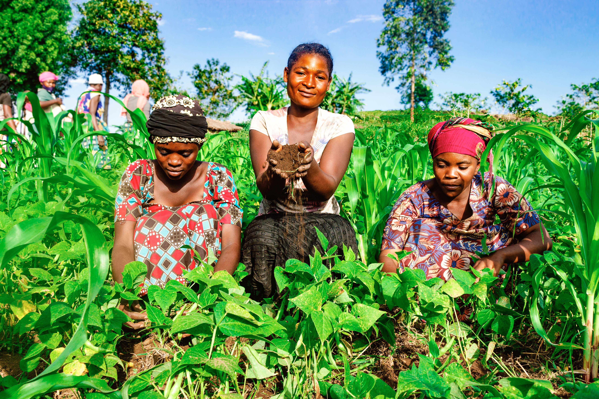
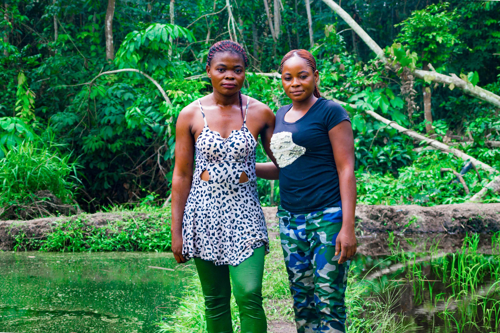

Portfolio
ASI

Since 1990, ASI has intervened in the Democratic Republic of Congo, Burkina Faso, Mali, Côte d'lvoire has been operating in the Republic of Congo since 2007. The organization has the aim to : offer the populations programs adapted to the local content (which presupposes a prelimainary series of social and cultural analyses) Develop innovative, effective, sustainable and programs.
View MoreLA SAPE

Les Sapeuse du Congo is a long term ongoing project that aims to focus on the presence of women within the sapeur culture in the Republic of Congo. In a conservative where women are expected to dress and act a certain way. What does it mean to step outside of that comfort zone inorder to challenge society's perspective on women's dress code and conduct in the Republic of Congo.
View MoreFIMI
The following photos features portraits of women from the organisation TALENT DES FEMMES AUTOCHTONES RURALES / MARIFA YA WA MAMA VIJIJINI, located in the Democratic Republic of Congo Nord-Kivu, Ville De Goma, Commune de Karisimbi, Q.Mugunga.
View MoreYANGAMBI
Yangambi is fast emerging as a global reference on how sustainbly managed forests can serve as a driver for local developmen. Research, restoration and climate-smart agriculture activities are putting this landscape at the core of forestry innovation. The following photos were taken within the Yangambi biosphere reserve.
View More